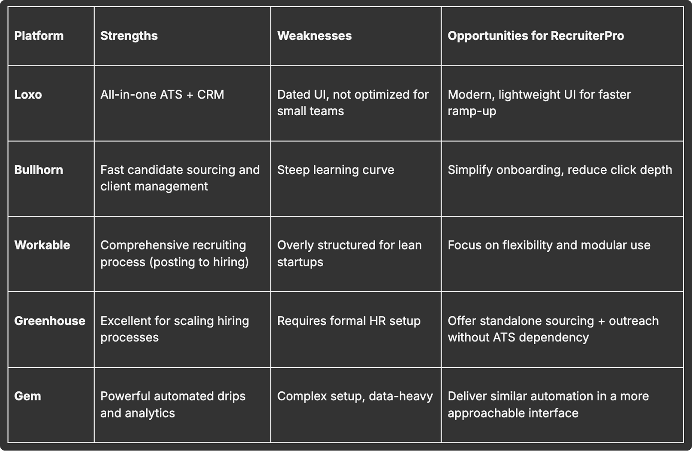
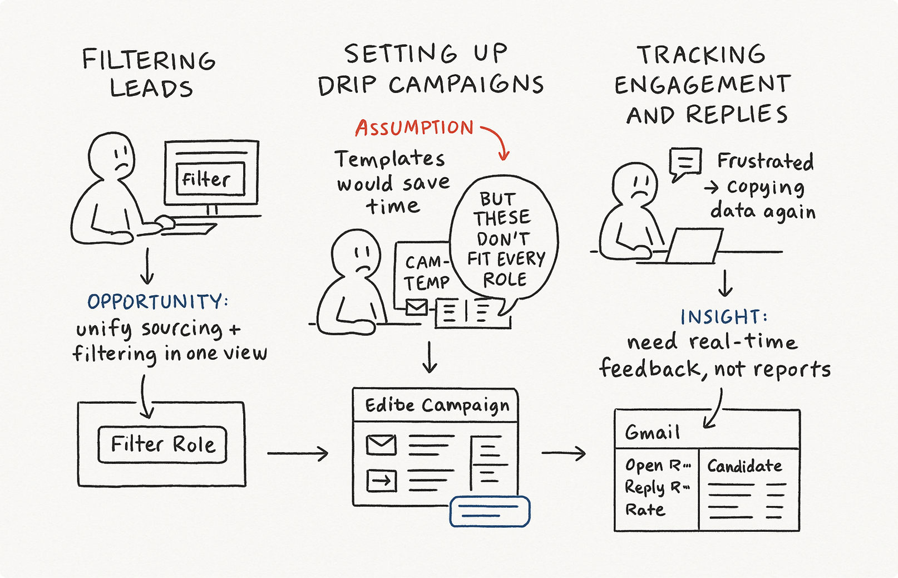
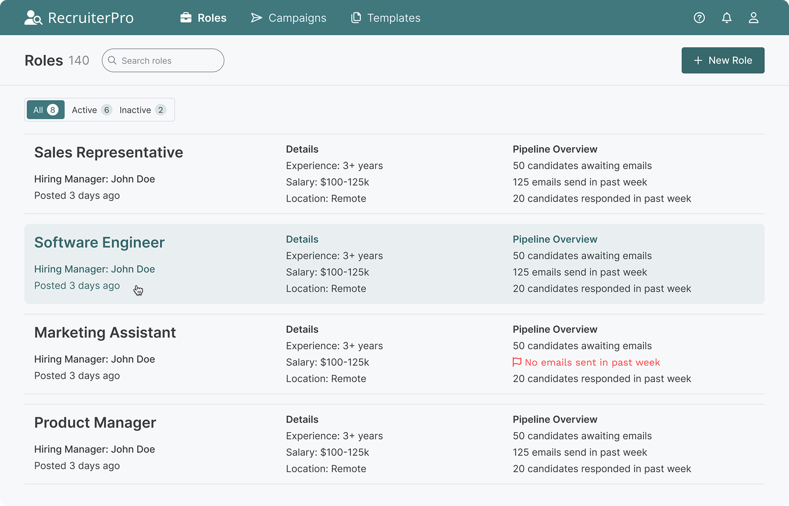
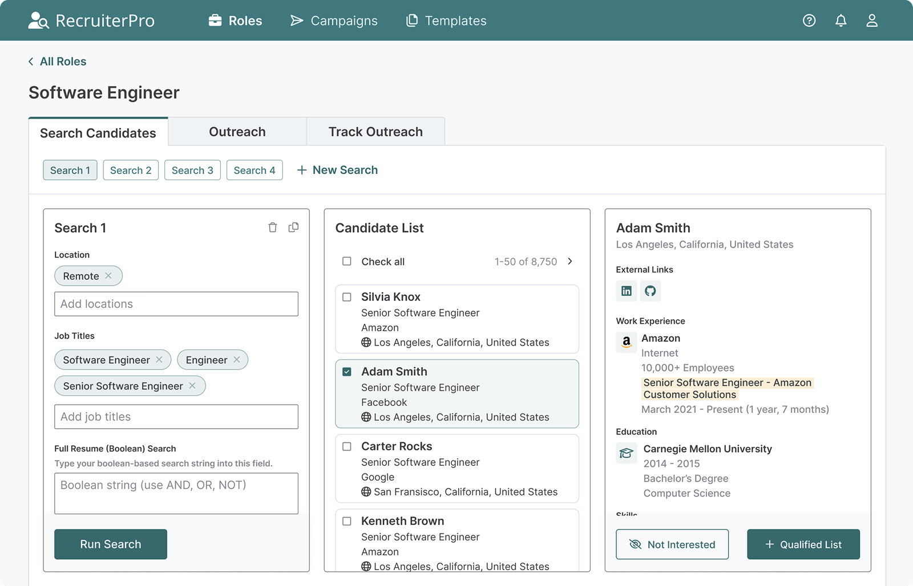
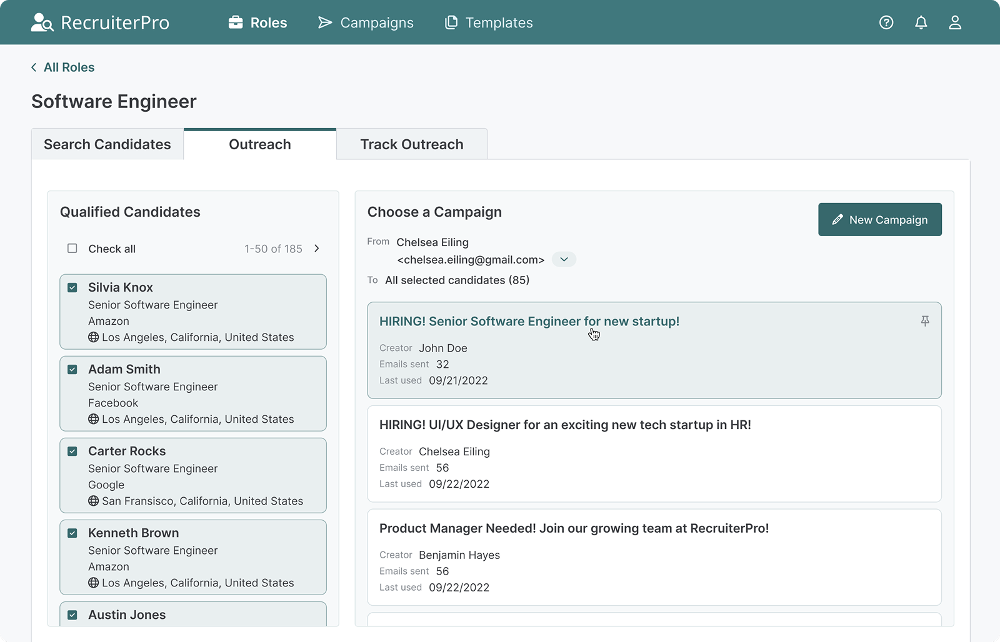
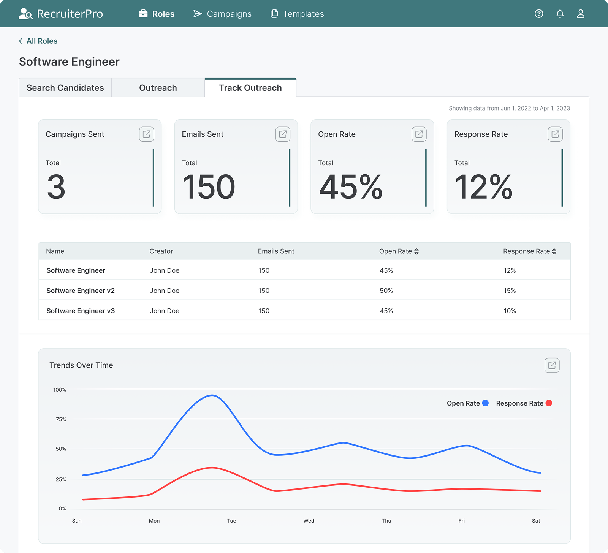
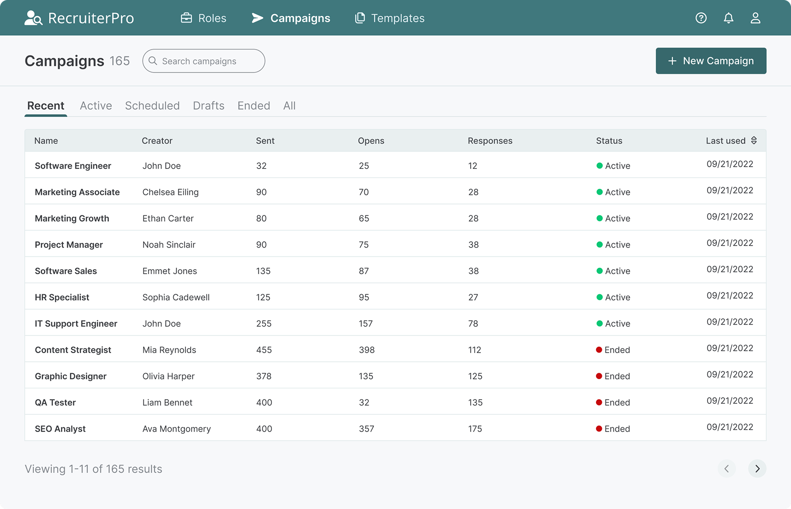
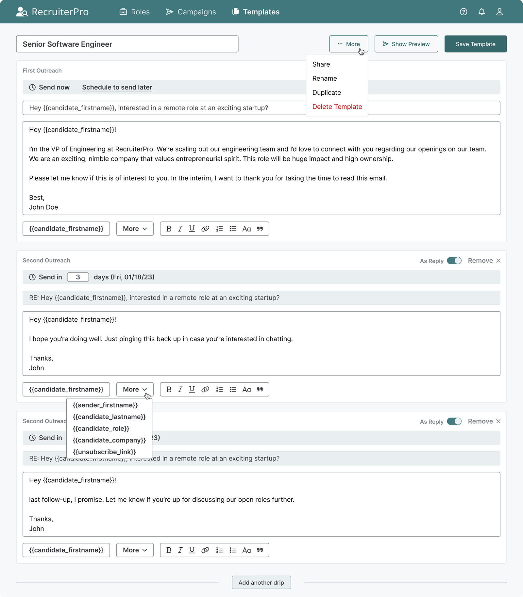

- Lead the end-to-end design process, partnering directly with the founder (who was also the engineer) from initial research through high-fidelity prototypes and usability testing.
- October 2022 – March 2023








